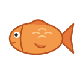
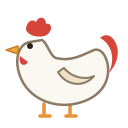

Unit 1
The six tones of Cantonese and how to read Jyutping. Every other unit builds on these.

Hear one syllable in six tones, learn their shapes, and read Jyutping.

Hear a syllable and pick its tone, from high-or-low up to all six.